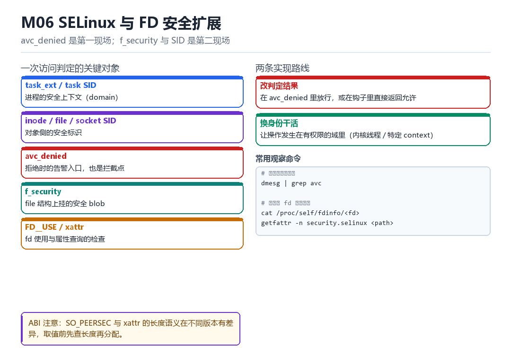
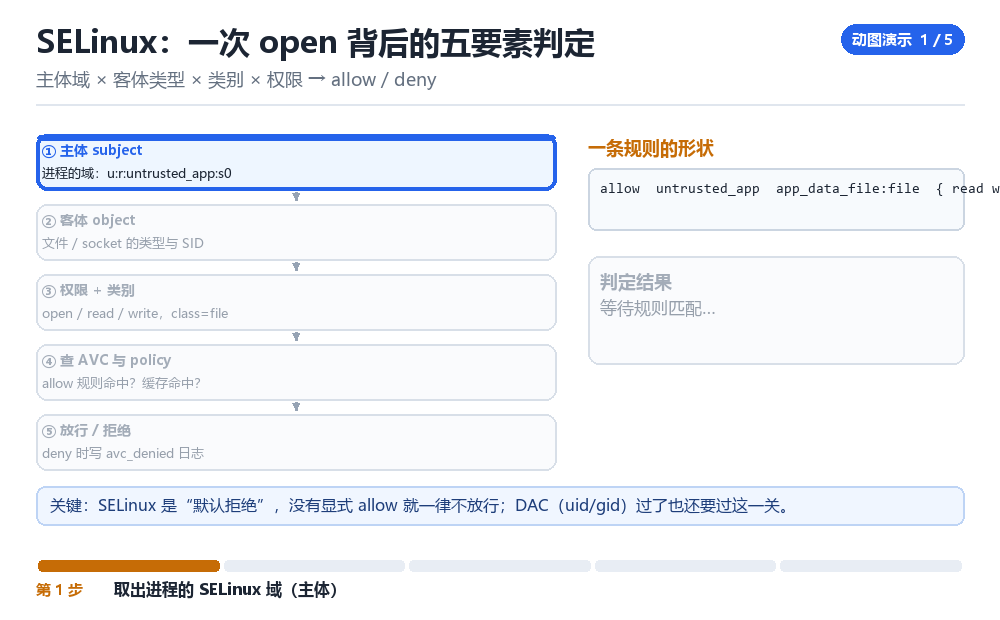

SELinux 与 FD 安全扩展
task_ext、avc_denied、inode/file/socket SID、f_security、FD__USE、xattr/SO_PEERSEC 长度 ABI
avc_denied 是第一现场；f_security 与 SID 是第二现场。
6.1 一次访问判定的关键对象

| 对象 | 作用 |
|---|---|
| task_ext / task SID | 进程的安全上下文（domain） |
| inode / file / socket SID | 对象侧的安全标识 |
| avc_denied | 拒绝时的告警入口，也是拦截点 |
| f_security | file 结构上挂的安全 blob |
| FD__USE / xattr | fd 使用与属性查询的检查 |
6.2 两条实现路线
- 改判定结果：在
avc_denied里放行，或在钩子里直接返回允许。见效快，但“策略本应拒绝却允许了”本身是异常。 - 换身份干活：让操作发生在有权限的域里（内核线程、特定 context）。更干净，但实现更复杂。
dmesg | grep avc
cat /proc/self/fdinfo/<fd>
getfattr -n security.selinux /path/to/file6.3 ABI 陷阱
SO_PEERSEC 与 xattr 的“长度语义”在不同版本有差异：有的返回实际长度，有的返回缓冲区所需长度，有的在缓冲区不足时返回截断值。取值前先查长度再分配，是最稳的写法。
6.4 本章自测
- task SID 与 inode SID 分别代表什么？
- 两条实现路线各自的痕迹是什么？
- SO_PEERSEC 的长度语义为什么容易出错？
- 如果策略拒绝了你需要放行的操作，你怎么定位是哪条规则？
6.5 深入：一次 avc 判定的路径
访问发生时，SELinux 取“主体 SID”（task 的）与“客体 SID”（inode/file 的），查访问向量缓存（AVC）；未命中就查策略库，得出允许/拒绝，并把结果缓存起来。拒绝时调用 avc_denied，同时打印 audit 日志。
avc_has_perm() // 判定入口
avc_denied() // 拒绝时的回调
security_file_permission() // LSM 钩子
security_inode_permission()6.6 实战：拿到一个 fd 的 SID
char buf[256]; socklen_t len = sizeof(buf);
getsockopt(fd, SOL_SOCKET, SO_PEERSEC, buf, &len);
# 或：
getxattr(path, "security.selinux", buf, sizeof(buf));6.7 原理推演：为什么“改判定”比“改策略”危险
改策略是“静态的、可审计的”；改判定是“动态的、隐藏的”。前者会留下文件与版本痕迹，后者只在运行时生效——但也意味着“一旦被发现在改判定”，就非常可疑。
| 方式 | 痕迹 | 可审计性 |
|---|---|---|
| 改 policy 文件 | 文件变化 | 高 |
| hook avc_denied | 运行时行为 | 低 |
| 换域执行 | 上下文变化 | 中 |
所以“最干净”的其实是第三条：不改判定，只是“让操作发生在有权限的地方”。
6.8 数据细节：avc 日志的字段
avc: denied { ptrace } for
pid=1234 comm="app_process"
scontext=u:r:untrusted_app:s0
tcontext=u:r:zygote:s0
tclass=process permissive=0四个关键字段：scontext（谁）、tcontext（对谁）、tclass（什么类型）、perm（什么操作）。写 allow 规则就是把这四个填进去。
6.9 深入：SID 是怎么算出来的
SID 是一个 32 位整数，由“安全上下文”在策略编译时分配。所以同一个上下文，在不同设备上的 SID 数值可能不同——不要把它当作跨设备的稳定标识。
| 对象 | SID 来源 | 稳定性 |
|---|---|---|
| task | 进程的 security 上下文 | 同设备稳定 |
| inode | 文件的 security.selinux 属性 | 随文件 |
| socket | 创建时的上下文 | 随连接 |
实用推论：跨设备比较 SID 没有意义；同设备内比较 SID 才有意义。写检测规则时要注意这一点。
6.10 深入：f_security 的位置与作用
struct file 里有一个 f_security 指针，指向“这个打开实例的安全信息”。它通常存的是“打开时的 SID”以及一些策略相关的缓存。改它，等于改“这次打开被如何看待”。
struct file* f = ...;
void* sec = f->f_security;
// 具体结构由具体 LSM 决定注意：不同 LSM（SELinux / AppArmor / 厂商自定义）的 f_security 布局不同。直接强转是危险的，必须先确认当前的 LSM 组合。
6.11 实战：验证一次权限改动是否生效
1. 改动前：执行目标操作，应失败
2. 应用改动：hook 或换域
3. 改动后：执行同一操作，应成功
# 同时观察 dmesg，确认没有新的 avc denied一次 open 被拒之前，内核已经问过五遍
dmesg 里滚出一行 avc: denied，用户态只拿到一个轻描淡写的 EACCES。把镜头拉到 EL1：DAC 先按 uid/gid/mode 过了一遍，然后 LSM 钩子从 current_cred 取出主体域，从 inode 的安全 blob 取出客体类型，补上 class 与权限集合，最后在 AVC 缓存里查一次。五个要素排成一列，缺一个都判不出来——而日志里那一行，只是这列走完之后留下的尾注。
也正因为判定发生在 EL1，用户态能做的只有“换一个身份去问”，内核态却能看见“问的是什么、按哪条规则判的、判定结果缓存在哪”。f_security、FD__USE、SO_PEERSEC 这些扩展点，本质上都是在这条判定链上补一次检查或换一个取值。
主体域 × 客体类型 × 类别 × 权限 → allow / deny

一次判定的逐拍拆解
- 系统调用 → 对 inode：先走 DAC，按
i_uid/i_gid与 mode 位判断，结果是不过就直接返回EACCES，根本进不了 SELinux；很多“以为是 SELinux 的问题”其实停在这一步，日志里连一行 avc 都没有。 - LSM 钩子 → 对 current：从
cred与 task 的 security blob 取主体 SID，得到scontext（如u:r:untrusted_app:s0），结果是判定有了“谁在操作”；SID 是策略编译时分配的 32 位整数，同一域在不同设备上数值可能不同。 - LSM 钩子 → 对 inode / file / socket：取客体 SID、类型与
tclass（file、dir、sock_file…），结果是判定有了“对什么操作”；file->f_security存的是打开那一刻的快照，与 inode 当前的 xattr 并不总是同步。 - AVC → 对 (ssid, tsid, tclass, requested) 四元组：先查缓存，未命中再查 policy 的 allow 规则，结果是生成 granted 位图；未命中且非 permissive 时调
avc_denied写审计日志并拒绝，命中则把结果缓存下来供下次用。 - 扩展点 → 对 f_security / FD__USE / SO_PEERSEC：在 fd 传递、跨进程 socket 取对端上下文时补一次 use 判定与长度探测，结果决定 fd 能否被对方使用、对端上下文能否被完整读出；长度语义按“先取长度、再分配、再取值”三段写，最稳。
| 现场对象 | 内核结构 | 取值方式 | 常见误判 |
|---|---|---|---|
| task SID | task_struct->security / cred | 主体域 scontext | 把 SID 当跨设备稳定标识 |
| inode SID | inode->i_security | security.selinux xattr | setxattr 后仍读旧缓存 |
| file SID | file->f_security | 打开时快照 | 以为等于 inode 当前 SID |
| socket SID | sk_security | SO_PEERSEC | 把返回值一律当实际长度 |
| AVC 结论 | avc_denied 日志 | dmesg 四要素 | 只看 EACCES，忽略 permissive=1 |
| FD__USE | fd 使用检查点 | fd 传递路径 | 漏检导致凭 fd 绕过判定 |
两条路线，痕迹落在不同的地方
想在内核侧让一次被拒的操作放行，通常只有两种做法。第一种是改判定结果：在 avc_denied 路径或 LSM 钩子里直接返回允许，见效快，但会在审计里留下“策略本应拒绝却放行了”的异常，而且 AVC 缓存里那个 granted 位图与 policy 对不上，别人重查一次就能发现。第二种是换身份干活：让操作发生在本来就有权限的域里，例如交给一个内核线程或合适的 context，判定链从头到尾自洽，代价是要额外处理 cred、fd 与目录归属。
实用判别法：改动后重跑同一操作，若 dmesg 里仍出现新的 avc: denied 但调用成功了，说明走的是第一条；若日志干净、且 cat /proc/self/attr/current 与操作发起者的域一致，才更像第二条。“绕过了检查”和“通过了检查”在日志里长得几乎一样，在检测方眼里却是完全不同的信号。
长度语义按三段写，别猜
- 第一次调用 → 对 SO_PEERSEC / getxattr：传空缓冲区或极小长度，拿到内核给出的所需长度或实际长度，结果是知道要分配多大；不同版本这里返回的含义不同，必须当作“提示值”而不是直接拿来用。
- 你 → 对缓冲区：按提示值加上余量分配，并把末位预留给结束符，结果是不管返回的是实际长度还是所需长度都装得下；按第一次返回值原样分配，恰好会在截断版本上少一个字节。
- 第二次调用 → 对同一对象：用足量缓冲区再取一次，并核对返回长度不超过分配量，结果是拿到完整上下文串；两次返回不一致且第二次被截断，就说明第一次的语义是“所需长度”，要按这一支处理。
可复现实验：制造一次拒绝，把四要素凑齐
# 1. 确认策略状态与当前域
getenforce
cat /proc/self/attr/current
# 成功：输出 Enforcing 与当前 domain；失败：Disabled = 后续判定根本不会发生
# 2. 触发一次可复现的拒绝并抓 avc 现场
runcon u:r:untrusted_app:s0 cat /data/local/tmp/deny_me 2>&1
dmesg | grep -E 'avc:.*denied' | tail -n 5
# 成功：一行里 scontext / tcontext / tclass / permissive 四要素齐全
# 失败：只有 EACCES 而无 avc 行 = 被 DAC 拦在前面，先查 uid 与 mode
# 3. 核对 fd 与文件身份
ls -l /proc/self/fd | head -n 8
cat /proc/self/fdinfo/3
getfattr -n security.selinux /data/local/tmp/deny_me
# 成功：fdinfo 的 flags 与 xattr 给出的 tcontext 对得上
# 失败：xattr 为空 = 文件尚未 label，判定走的是默认类型
# 4. 两段式取 SO_PEERSEC（先长度，再分配，再取值）
cat /proc/self/net/unix | head -n 3
# 成功：第一次取长度、第二次取完整串，两值一致；失败：第二次返回截断值 = 缓冲区按第一次返回值当长度了真正的判据是“四要素齐全且自洽”：scontext 是发起者域，tcontext 是被访问对象类型，tclass 决定查哪张规则表，permissive 决定这条 denied 是否真的拦住了调用。只看返回值会漏掉 permissive，只看日志会误判 DAC 拦截。
这条判定链在别处还会再走一遍：Frida 部 F05 讲 server 与 Android SELinux 时，核心问题是 server 必须待在能 ptrace zygote 的域里，否则连 attach 都被 avc 挡住；LSPosed 部 L06 讲 Binder、FD 与 linker 账本收口时，处理的是 fd 与 Binder 引用在进程间怎么不留残影。M06 补上的，是判定发生那一刻 EL1 里的五要素与两个现场。